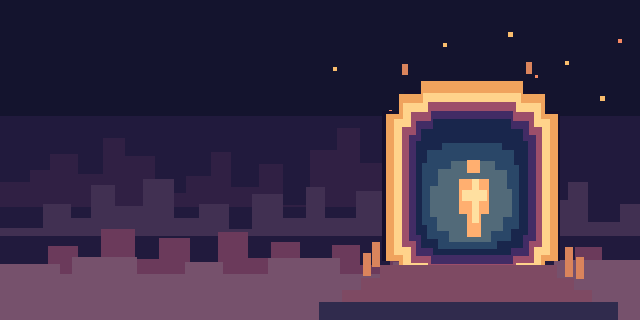

Willkommen zurück.
Deine Spiele und Tools, immer bereit für den nächsten Start.
Neue Welten.
Ein Portal.
Spiele und Tools an einem Ort. Mehr ist auf dem Weg.

Alle Apps 03
Passe Suche oder Filter an.
Demnächst im Portal
Downloads.
Installationen und Updates an einem Ort.
Neue Installationen erscheinen hier.
News.
Die neuesten offiziellen Release-Notizen aus der Sammlung.
Aktivität.
Hier siehst du den Stand deiner Apps und Downloads.
Letzte Ereignisse
Einstellungen.
Passe an, wie Cinderport auf deinem PC startet.
Mit Windows starten
Cinderport öffnet sich nach der Anmeldung automatisch und prüft installierte Apps auf Updates.
Cinderport Updates
Neue Launcher-Versionen werden automatisch geladen und beim nächsten Beenden installiert.
Im Infobereich weiterlaufen
Das Schließen des Fensters hält Cinderport im Hintergrund. Über das Tray-Menü kannst du es vollständig beenden.
Benachrichtigungen
Melde abgeschlossene Installationen und bereite Updates, wenn Cinderport im Hintergrund ist.
Beim Streamen nicht stören
Pausiert automatische Installationen und Benachrichtigungen. Manuelle Aktionen bleiben verfügbar.
Dein Portal
Kompaktansicht
Zeigt mehr Apps gleichzeitig in der Bibliothek.
Animationen reduzieren
Deaktiviert Bewegungen und Übergänge im Launcher.
Cinderport Updates
Automatische Updates
Startargumente je App
Diagnose.
Technische Angaben ohne Spielstände oder Zugangsdaten.
Über Cinderport.
DEINE WELTEN.
DEIN STARTPUNKT.
Cinderport bringt Spiele und Tools von Staatseigentum an einen Ort. Die Bibliothek wächst mit neuen Veröffentlichungen. App-Releases kommen direkt aus den offiziellen GitHub-Repositories; Downloads werden anhand ihrer SHA-256-Prüfwerte verifiziert.
Installierte Apps und Cinderport selbst werden beim Start geprüft. Updates werden automatisch geladen.